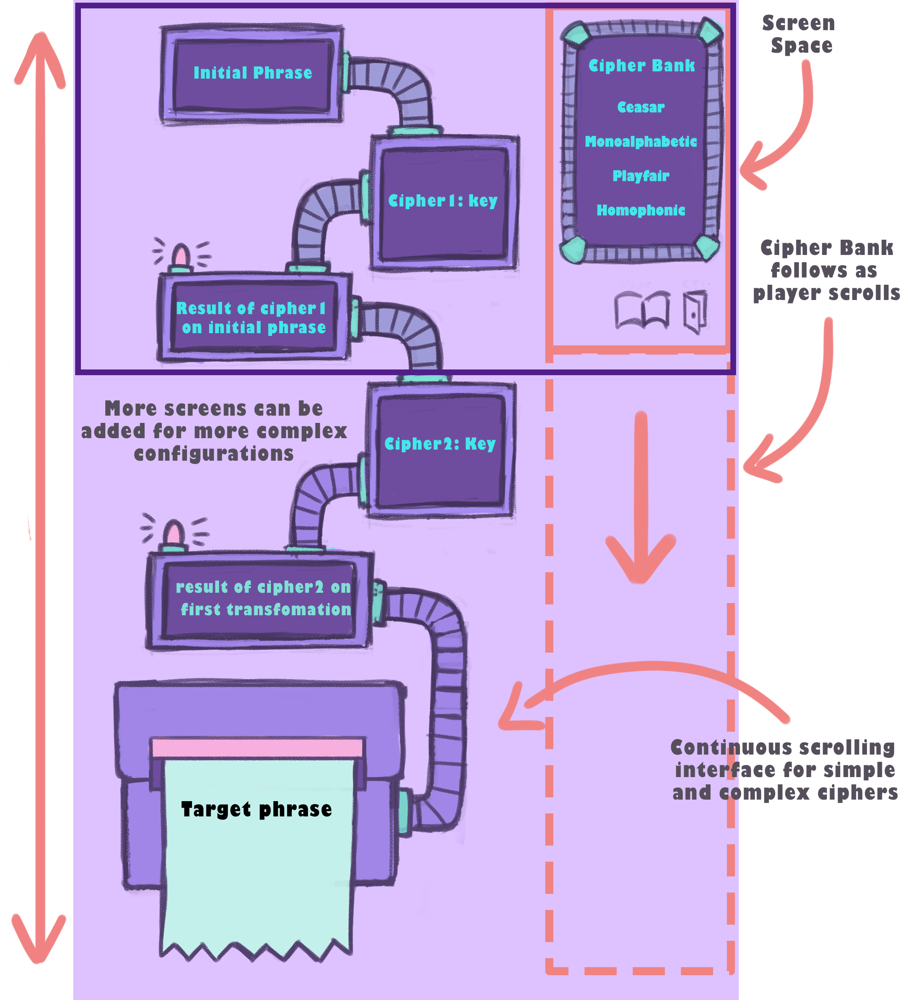
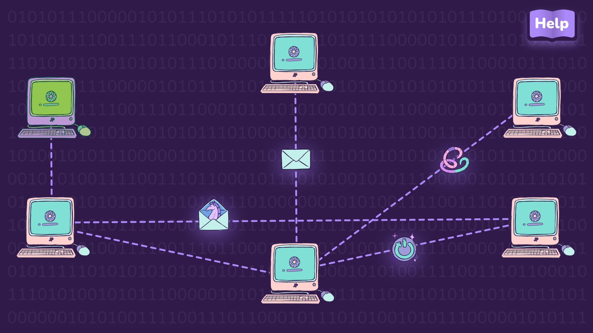

Collaboration with FIEA: Cyberscouts
The CyberScouts Team at Florida Interactive Entertainment Academy (FIEA), Orlando, Florida
CyberScouts was conceived from a collaboration between staff at the College of Education, University of South Florida St. Petersburg, and game development students at Florida Interactive Entertainment Academy (FIEA), University of Central Florida during the spring of 2023.
Over several months, students at FIEA worked to develop an educational mobile video game application with the objective of teaching security awareness, cryptography, network and web security, and other cybersecurity topics to an audience of Girl Scouts.
CyberScouts is intended for the Junior, Senior, and Ambassador Girl Scout levels (Grades 4-5, 9-10, and 11-12). The game introduces Girl Scouts to complex cybersecurity concepts and enhances engagement through playful interactions in a mobile application.
In this project, I was the initial point of contact between David Rosengrant, Campus Dean of Education at USFSP, and Erik Sand, the Director of Strategic Partnerships at UCF’s FIEA. Erik Sand is the professor for Experimentation, Application & Innovation in Games (DIG 5856), casually referred to by students at FIEA as “Game Lab”.
The proposal I wrote to Erik Sand and reviewers to initiate this collaboration was reviewed and approved by my principal investigator, David Rosengrant.
You can read my proposal here.
In Game Lab, students must work with professionals, researchers, and educators coming from non-entertainment disciplines to develop a game, or game-like product, used in non-traditional applications such as medical simulation, education and research.
Students in this course form self-defined groups based on the topics that interest them, as pitched by the various subject matter experts that come in person to present their game ideas. As one of those subject-matter experts, I traveled to FIEA’s campus to present our game idea and objectives to students.
A group of 10 students selected our game pitch, making up a team of programmers, artists, and level and tech designers. I was the main point of contact at each stage of the game’s development to deliver updates, define learning objectives, and clarify goals/deadlines.
At a later stage in the development process, I reached out to in-network cybersecurity groups and professionals for their opinions on the game’s educational value. Dr. Nathan Fisk, PhD, Assistant Professor of Cybersecurity Education in the USF College of Education, and USF students in the The Whitehatters Computer Security Club (WCSC), were two important contact points.
Explanation and mockup of Ambassador level gameplay.
At the end of Gamelab, each team presents their game in its polished form for a grade. When students in our group were expected to deliver their results, I traveled again to UCF’s campus to support students and reiterate how this product will support our educational efforts at the College of Education at USF.
The belief my PI and I share is that the gap in the cybersecurity workforce could be substantially addressed if women were proportionately represented in the industry. By getting girls interested in STEM, particularly cybersecurity, early on, we may begin to achieve gender parity in the cyber workforce.
By targeting one of the most relevant audiences that need to develop cybersecurity skills - girls interested in STEM - we aim towards a positive ripple effect of greater gender equality for the next cohort of women leaders and innovators. The Girl Scouts organization seemed to be the perfect partner to collaborate with for this project due to their long history of instilling leadership, empowerment, and skill development in young girls.
Girl Scout volunteers and program facilitators can use CyberScouts as an easy-to-facilitate educational tool that requires minimum technical cybersecurity expertise to run with a troop. This application aligns with the current curricula used by Girl Scouts of the USA, who partnered with Palo Alto Networks in 2018 to introduce cybersecurity badges to girls in grades K–12.
Layout of Junior level gameplay.
Girls at the Junior level will explore concepts relating to network defense, such as threat detection, incidence response, etc. and learn to recognize different forms of malware, including computer viruses, worms, and Trojans.
At the Senior level, girls will be able to perform threat mitigation by encapsulating data to neutralize viruses and safeguard their system.
Finally, at the Ambassador level, girls will get to learn about cryptography, the technique of securing protected information derived from mathematical concepts. In the game, players are presented with encrypted messages and are required to use their knowledge of various ciphers and encryption protocols to deduce the encryption process and decrypt the information.